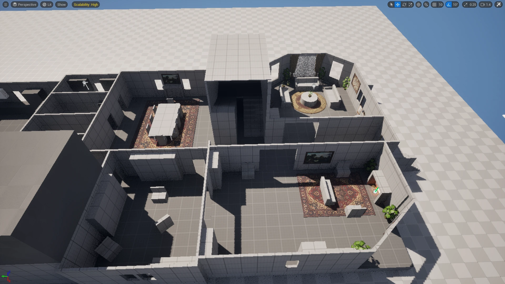
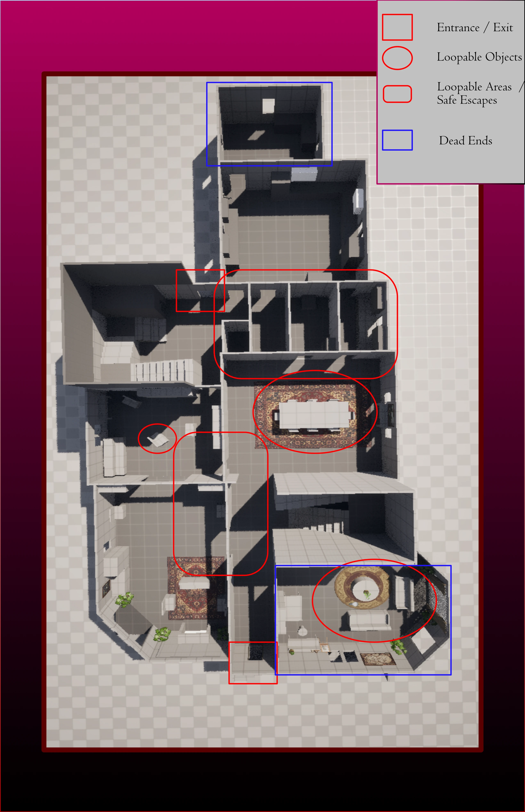
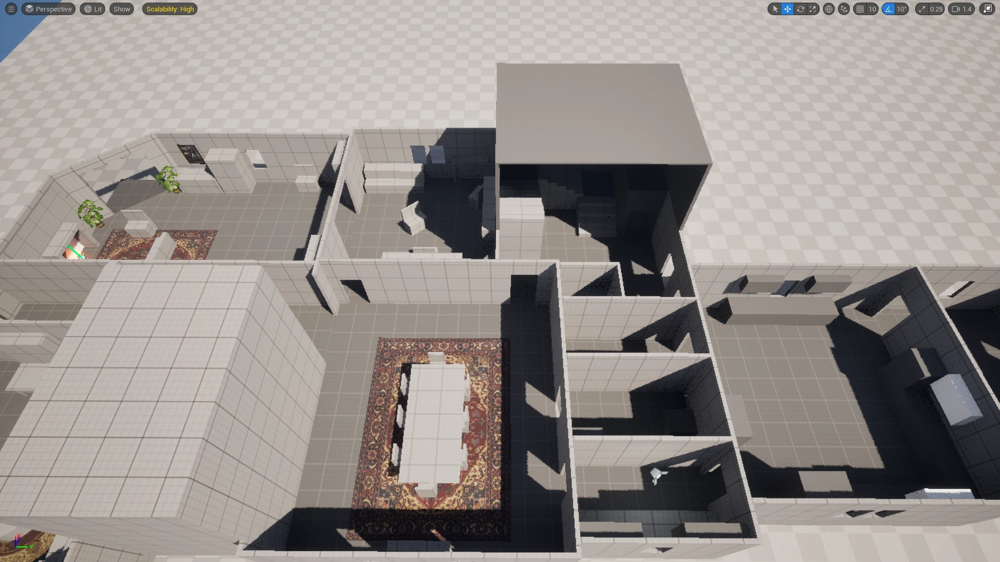
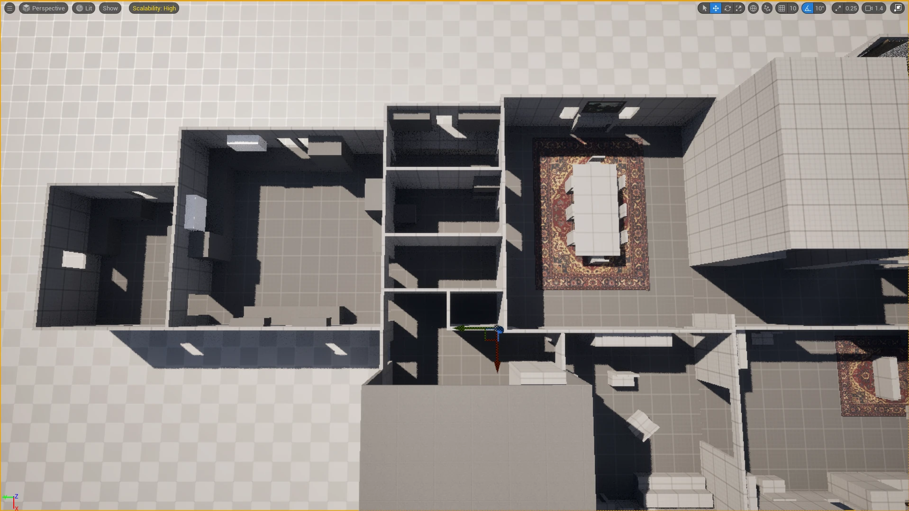

A house that wants you trapped.
742 Blackwood Lane is a custom map concept for Phasmophobia — a co-op ghost investigation game. The brief was to design a medium-sized residential level that escalated in tension as players moved from the familiar warmth of a family home into the unsettling isolation of a detached workshop at the rear of the property.
The core design challenge: Phasmophobia maps must balance two competing needs. Players need enough open space to retreat safely from a hunting ghost. But they also need enough complexity and confinement to feel genuinely threatened. Every hallway, doorframe, and room transition in this map was designed with that tension in mind.
"Every corridor is a question: do I press further, or do I run? The map's job is to make both feel dangerous."
What the map teaches through play.
Loop Routes
Every major area has at least two exits. Players can circle through the ground floor in an emergency without dead-ending into the ghost.
Zone Escalation
Three distinct zones — Domestic (safe), Transitional (uncertain), and Isolated (dangerous) — each with visual and audio cues that signal the shift.
Evidence Placement
Ghost rooms are weighted toward the workshop zone to incentivise deep exploration while keeping the risk of being caught far from the exit very real.
Design decisions, room by room.
- Front entrance: Wide, well-lit, and familiar. Players feel safe here — a deliberate misdirection that makes later areas feel more hostile by contrast.
- Ground floor hallway: The main artery of the map. Sightlines are long enough to see the ghost at distance but tight enough that turning corners feels risky.
- Kitchen/utility passage: The transition point. Lighting drops, the floor changes material (audio shift), and the first evidence room is placed here to reward players who explore.
- Garage connector: A deliberate choke point — single door, no windows. Players must commit to the workshop zone when they cross this threshold.
- Workshop: The map's deepest zone. Low ceilings, cluttered geometry, multiple hiding spots for the ghost. Only one reliable exit route back to the house.
- Basement: Optional high-risk area containing rare evidence. No loop exits — entering is a calculated gamble.
From floor plan to flow map.
Reference Analysis
Played all existing Phasmophobia maps and documented choke points, loop opportunities, ghost room distributions, and the moment fear first registered per map. Built a comparison matrix to identify design patterns.
Floor Plan Drafting
Sketched three alternate floor plans before choosing one — selecting for: zone clarity, loop viability, and a strong sense of architectural believability (this should feel like a real house).
Flow Map
Translated the floor plan into a node-based flow map showing all movement routes, exit options, and risk escalation per zone. Used this to stress-test ghost hunt scenarios mentally before building.
3D Blockout in Blender
Built a full blockout to validate proportions, sightlines, and room transitions. Walked through the model first-person using Blender's viewport camera to check for scale and feel.
GDD Write-Up
Produced a full GDD entry for the map — covering zone descriptions, evidence room probability tables, ghost behaviour notes, and a developer handover brief.
Built with.
Unreal Engine 5
UE5 (3D Modelling)
Google Docs
Miro
Trello
Maps & Documentation.

HH1
HH2

HH3

HH4